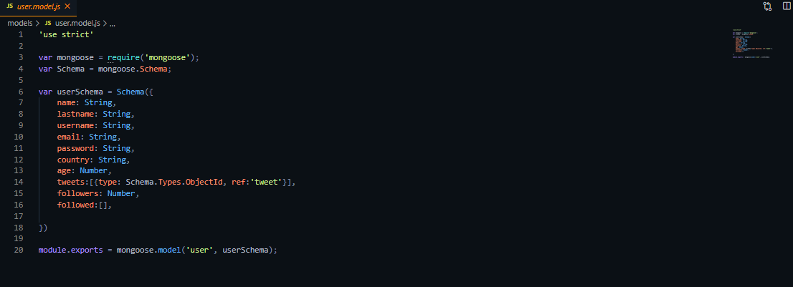

Twitter en Node.js, MongoDB y Javascript
Se trata de codigo back-end inspirado en la plataforma Twitter con el fin de realizar funciones similares, esta programado en JavaScript, MongoDb, Node.js, Expressy utiliza otras dependencias que ayudan a mejorar el funcionamiento del programa, entre estas encontramos "bcrypt-nodjs", "moment", "jwt-simple" cada una de estas en su ultima version, para realizar un test del proyecto se utilizo Postman el cual fue diseñado para la prueba de aplicaciones API's y como adminsitrador de Base de datos MongoDB se utilizo Robo3T.
Esta API cuenta con funciones que intentan igualar a las mismas que realiza Twitter, entre estas funciones encontramos que cuenta con una funcion para Registrar a un usuario propio con los datos necesarios, permite realizar un Inicio de Sesion retornando un token el cual tiene como fin autenticar las acciones futuras, una vez el usuario anteriormente registrado inicie sesion puede realizar acciones como postear Tweets, editar o eliminar tweets, podra buscar a cualquier registrado en la plataforma, seguir a ese usuario o dejar de seguirlo, en su perfil podra ver la cantidad de seguidores que tiene, tambien podra ver todos sus datos registrados, editarlos en caso fuse necesario o eliminar su cuenta si lo desea, cabe resaltar que las cambios y acciones que hara se veran reflejadas en su perfil por lo que no podra alterar los tweets y los perfiles de los demas.
El desarrollo de esta proyecto me ayudo a practicar y a recordar conceptos de programacion que se me habian olvidado, mejore mi forma de pensar y la logica que empleaba en proyectos anteriores, en cuanto a los conocimientos nuevos que obtuve esta: como recorrer un arreglo con el fin de encontrar coincidencia con parametros especificos, tambien aprende a utilizar el metodo "split()" que anteriormente no habia utilizado nunca, a diferencia de los proyectos hechos antes este tenia como caraceteristica utilizar una ruta y los parametros enviados serian en una sola linea de texto
Para acceder al proyecto ingrese al siguiente link de github Click Aqui
- 